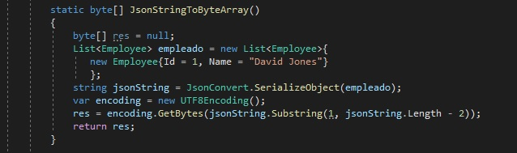
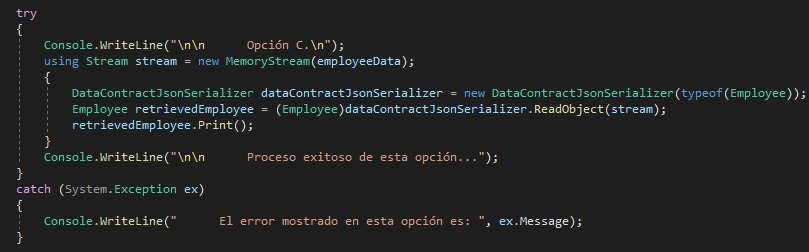
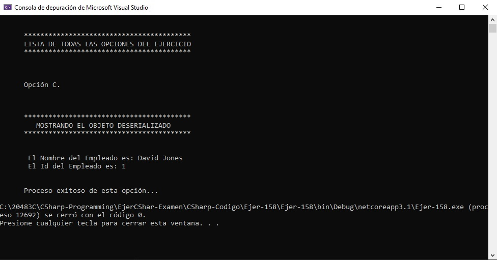

{"Id":1,"Name":"David Jones"}
The following code segment invokes the service and stores the result:
You need to convert the returned JSON data to an Employee object for use in the application.
Which code segment should you use?

A. Option A
B. Option B
C. Option C
D. Option D
Correct Answer: C
Section: Volume B
Explanation
Explanation/Reference:
Explicación
Para la solución del ejercicio es necesario tener un objeto JSON del tipo Employee, el cual primero es serializado a Byte y luego pasado como una cadena de bytes a la MemoryStream.
El objeto de tipo empleado según los requisitos del ejercicio ha sido capturado de un servicio. Ya que no tenemos el sericio, lo que hacemos es Hard code el objeto JSON del tipo empleado. Este JSON luego se convierte de JSON a Byte. Para ello se ha creado el método correspondiente tal y como se muestra en la siguiente imagen:

Las diferentes opciones del ejercicio se pruebas en tramos de código de try - catch. Cada opcion se presenta por separado. En la siguiente imagen envolvemos el código que es la respuesta correcta del ejercicio al ejecutar exitosamente el proyecto. El código que ejecuta de manera exitosa la opción se muestra a continuación en una imagen:

Respuesta:
Mostrando de manera visual la respuesta:
Fuentes:
Para la corversión de JSON a Byte[]:
https://stackoverflow.com/questions/1056121/how-to-create-json-string-in-c-sharp
La serialización y deserialización:
https://stackoverflow.com/questions/23468552/how-to-serialize-and-deserialize-a-class-with-byte-array-as-a-member-in-c-sharp
-
-